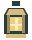

ETT ÄVENTYR TAR SIN BÖRJAN
Designat för PC med tangentbord. Du kan öppna menyer på mindre skärmar.
PROJECT REALM · KAPITEL 01
En by att återvända till. En skog att gå vilse i. Ett ljus som väntar på dig.
WASD Förflytta SPACE Attackera E Prata
DIN RESA
Aktivera JavaScript för att spela Project Realm.